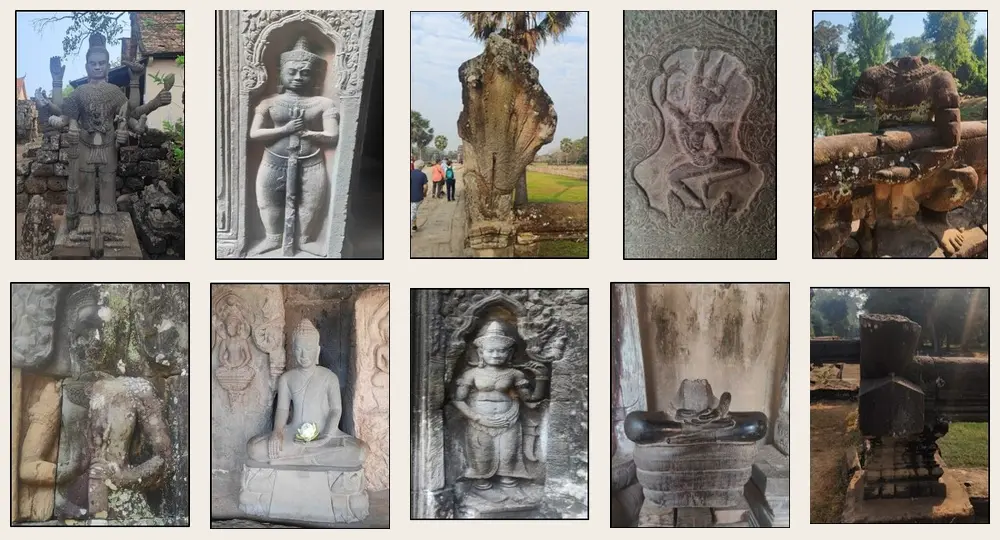
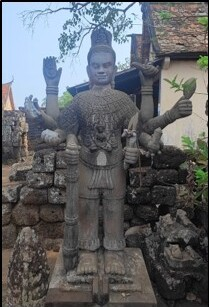
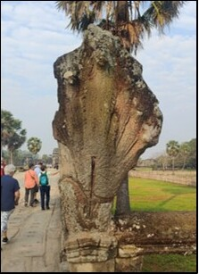
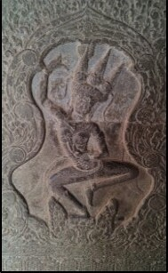
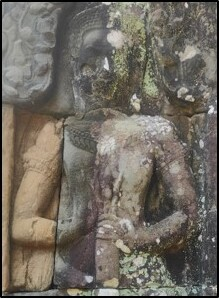
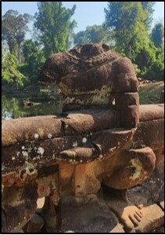
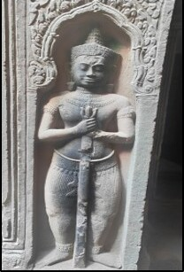

Preserve visual evidence
Create durable photographic records that help future researchers compare condition over time.
Angkorian-AI research initiative
AI-Assisted Visual Condition Assessment of Khmer Stone Heritage Objects
A preservation-oriented research project that combines field photography, cultural heritage expertise, and responsible artificial intelligence to document visible change in Khmer stone objects before valuable evidence is lost.

Preservation begins with seeing change before it becomes loss.
The project turns field photographs into traceable visual evidence for documentation, expert review, and future conservation planning.Our mission
Khmer stone heritage carries evidence of art, belief, language, governance, craftsmanship, and regional exchange across Southeast Asia. Yet that evidence is exposed to tropical weather, biological colonization, cracking, surface deposits, material loss, earlier repairs, and changing site conditions.
Expert field inspection remains essential, but it is difficult to revisit every object with the same frequency and documentation detail. Angkorian-HeritageObj studies how computer vision can support a consistent first view of visible condition—never as a replacement for conservators, archaeologists, historians, or epigraphers.
Create durable photographic records that help future researchers compare condition over time.
Help heritage teams organize, screen, and prioritize large collections of field photographs.
Develop methods, data practices, and training pathways led by Khmer heritage needs.
Use visible evidence, uncertainty, metadata, and human validation rather than opaque automation.
Field documentation
The broader collection effort reaches heritage locations across Siem Reap, Battambang, and Kampong Cham, covering more than seventy temples and related contexts. The first research focus is the temple landscape of Siem Reap, especially Angkor Archaeological Park and the areas surrounding Angkor Wat.
Photographs are collected under real conditions: changing sunlight, shade, vegetation, visitor access, uneven viewpoints, weathered surfaces, and objects that cannot be moved. This complexity is not noise to remove—it is part of the conservation reality the research must understand.
Explore Ancient Khmer Stone AnalysisPrimary focus
Extended field context
Extended field context
Historical scope
Earlier foundations
Core temple landscape
Continuity and transformation
Preservation and digitization workflow
The workflow is designed to be reproducible, inspectable, and adaptable to conservation priorities. AI supports the middle of the process; cultural and scientific responsibility guide every stage.
Capture the object, surface, setting, and visible context through careful field photography.
Organize location, object type, period context, image quality, provenance, and annotation confidence.
Screen overall condition and identify visible forms of deterioration using computer vision and expert-defined labels.
Review uncertain cases, compare visual evidence, correct labels, and keep expert judgment central.
Produce structured records, overlays, condition notes, and reusable evidence for future study and monitoring.
What the system looks for
These are photographic screening cues. Final conservation decisions require on-site expertise, material knowledge, and appropriate scientific assessment.
Real project imagery
Relief depth, sandstone texture, shade, biological growth, missing material, deposits, and earlier interventions can appear together in one photograph.






Project field photographs from the Angkorian-HeritageObj research collection.
Part of Angkorian-AI
Angkorian-HeritageObj focuses on visible physical condition. Related tasks extend the same preservation mission to inscriptions, document-like layout, historical scripts, and reusable digital records.
Screen photographs for visible preservation condition and multiple forms of deterioration, while keeping every prediction open to expert review.
Enhance weak carvings, localize inscription regions, recover irregular text lines, and support careful transcription of ancient Khmer writing.
Study visual and epigraphic evidence across Pre-Angkorian, Angkorian, and Post-Angkorian contexts without reducing interpretation to a single automated label.
Connect photographs, condition notes, object context, provenance, and annotations in structured records designed for long-term research use.
Long-term goal
Make Khmer heritage evidence easier to preserve, study, compare, and pass to the next generation—without separating technology from cultural responsibility.
Support repeatable documentation, early visual screening, condition comparison, and prioritization for expert follow-up.
Create verifiable, structured evidence for archaeologists, historians, epigraphers, material specialists, and computer vision researchers.
Strengthen locally relevant AI methods for low-resource heritage and encourage regional knowledge exchange while respecting provenance.
Help students and the public understand that stone heritage is not static: it carries visible histories of creation, use, damage, care, and continuity.
Research network
Project lead & methodology design
Principal investigator
Data preparation & annotations
Data validation
Khmer epigraphy
Methodology & experiments
Project status
Manuscripts and technical studies are in preparation. Data, code, and access details will be shared only when conservation needs, cultural sensitivity, provenance, and partner agreements allow.
Collaboration
We welcome dialogue with conservators, archaeologists, epigraphers, museums, heritage authorities, Cambodian universities, regional scholars, and computer vision researchers working on preservation-centered methods.
Contact the project